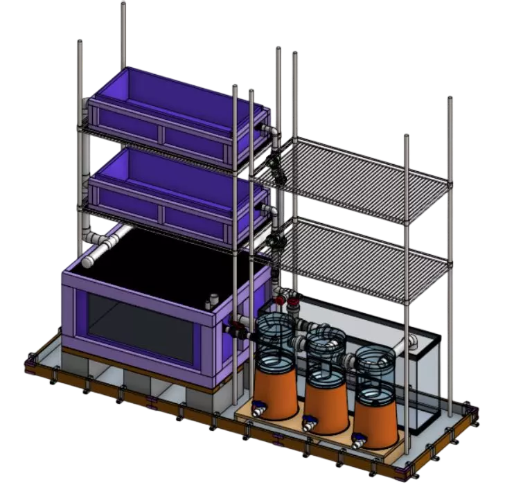
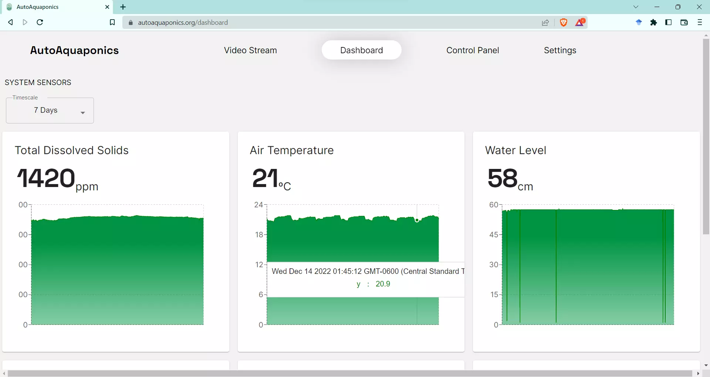
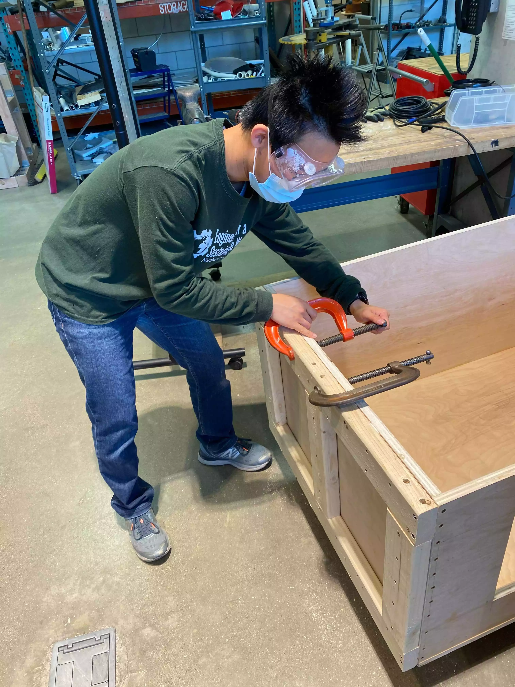
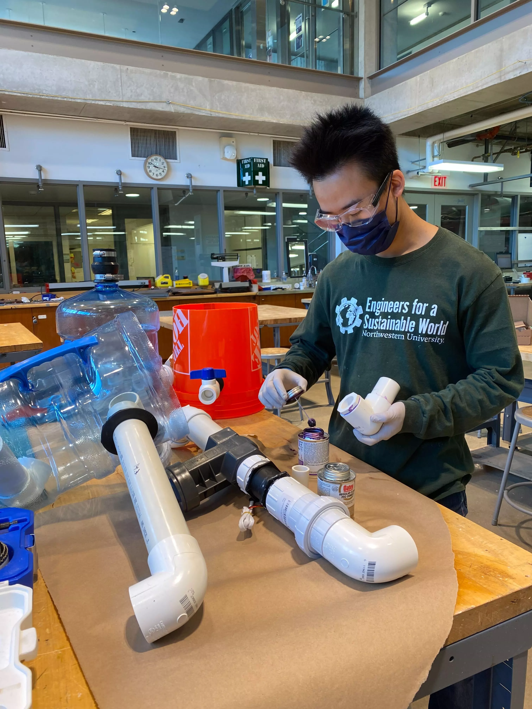

Copyright © 2024 Bill Yen.
AutoAquaponics
A Fully Automated Indoor Farming System
About:
I founded AutoAquaponics with Northwestern's chapter of Engineers for a Sustainable (ESWNU) in March of 2020 after getting sent home along with all the other undergrad students due to the COVID-19 pandemic. My goal in starting this project was to create a community for people interested in agriculture and automation to come and develop their skills regardless of where they were in the world. We built AutoAquaponics through Zoom meetings, virtual design sessions, and digital mockups, and eventually completed the physical prototype in June 2022. Since then, we've been continuously improving the system to optimize its ability to grow fish and plants and using it to educate our community about sustainable agriculture.
Problem:
ESWNU's existing hydroponic systems are difficult to operate over time and require a lot of manual labor, which made maintaining them on Northwestern’s campus impossible due to the COVID-19 pandemic.

Solution:
AutoAquaponics is a fully automated, remote monitored and controlled farming system in Ford SB240 that efficiently outputs both fish and plants without human labor for at least one month while minimizing the use of water and electricity.
Plumbing:
In order to create a low-maintenance and robust aquaponic system, we built three filter tanks, each with their distinct functions (settling tank, membrane filtration, biofilm reactor) in order to remove pollutants in the water and transform fish waste into nutrients for the plants. The plumbing system is controlled with a number of electronic valves, and it consists of a 100 gallon fish tank, two 40 gallon grow beds, and a 60 gallon sump tank. Details on how I calculated the fluid dynamics of the plumbing system can be found here.
Electronics:
The electronics portion of AutoAquaponics controls everything from our plant lights to water pumps and valves. It consists of a smart outlet box powered by an ESP32 microcontroller and a sensor box that connects to WiFi and interfaces with the outlet box via BLE.
Software:
Our software platform allows users to monitor and control the system from afar, and its features include live sensor graphs, email/text updates, and a video stream of the fish tank. It was built via React, and utilizes Google Firebase for data storage and a Python program we wrote to read from the sensors. Part of the code (C++) also runs on our ESP32 microcontrollers, which control our actuators such as lights, pumps, and automated valves.
My Roles:
Grants Awarded:

